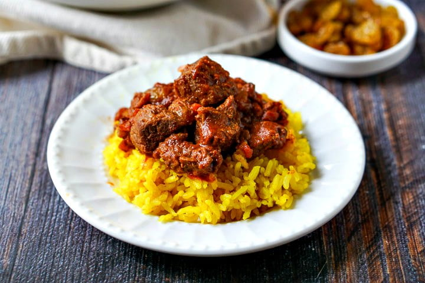

Beef Curry

Description
Paleo-friendly spicy beef curry stew made in an Instant Pot.
Delicious Beef curry stew, ideal meal during the fall or winter season.
Ingredients:
- 2 Tablespoons Olive Oil
- 2 Pounds cubed beef stew meat
- salt and pepper to taste
- 2 jalapeno peppers, chopped
- 4 cloves garlic, minced
- 1 tablespoon minced fresh ginger root
- 4 tablespoons curry powder
- 2 cups beef broth
- 1 (28 ounce) can fire-roasted diced tomatoes
- 1 lb Yukon Gold Potatoes
- 3 carrots, sliced
- 1 large onion, sliced
Directions:
- Turn on a multi-functional pressure cooker (such as Instant Pot®) and select Saute function. Pour in olive oil and heat until sizzling; add meat and season with salt and pepper. Cook until browned, 5 to 7 minutes per side.
- Transfer meat to a plate, reserving juices in the pot. Add jalapenos, garlic, and ginger to the pot. Cook and stir until tender, about 2 minutes. Season with curry powder.
- Pour 1/2 of the beef broth into the pot; scrape brown bits from the bottom of the pot using a wooden spoon. Return meat to the pot with remaining beef broth, tomatoes, potatoes, carrots, and onion. Close and lock the lid.
- Select high pressure according to manufacturer's instructions and set timer for 35 minutes. Allow 10 to 15 minutes for pressure to build.
- Release pressure using the natural-release method according to manufacturer's instructions for 10 minutes. Release remaining pressure carefully using the quick-release method according to manufacturer's instructions, about 5 minutes more. Unlock and remove the lid.